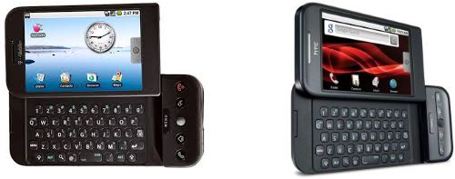
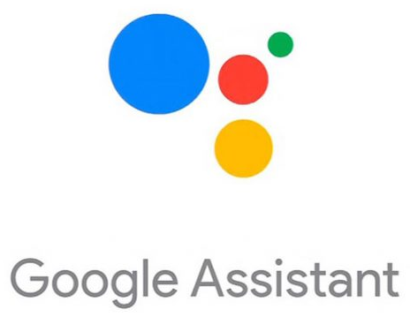

Após a aquisição pela Google, o sistema Android passou por desenvolvimento interno,
e, em conjunto com várias marcas conhecidas como a Samsung, LG e Motorola, foi
lançada uma plataforma mobile única e open source (com código aberto para o
público, ou seja, todas as pessoas podem vê-lo, modificá-lo e alterá-lo para
melhorias).
O primeiro celular com o sistema operacional Android foi lançado oficialmente em 22
de outubro de 2008 pela fabricante HTC Dream e o seu modelo foi chamado de T-
Mobile G1. Ele foi lançado para competir diretamente com o Symbian, BlackBerry,
Windows Mobile e com os novos celulares da Apple, que na época estava na segunda
geração do iOS.

Google Assistente
O Google Assistente é uma inteligência artificial da Google, lançada em 2016 como
uma evolução do Google Now. Ele foi projetado para interagir com os usuários por
meio de comandos de voz, permitindo realizar tarefas, responder perguntas e controlar
dispositivos inteligentes. O Assistente se destaca pela capacidade de compreender o
contexto das conversas, facilitando interações mais naturais. Ele foi introduzido junto
com o Google Home e se expandiu para várias plataformas, como smartphones e
smart TVs.
O Google Assistente, integrado ao Android, é amplamente considerado um dos
assistentes virtuais mais avançados, com excelente reconhecimento de voz e uma
integração profunda com o sistema e serviços da Google. Ele oferece grande
flexibilidade e responde a uma vasta gama de comandos.

Android TV
Android TV é uma versão do sistema operacional Android, especialmente voltada para
grandes telas, ou seja, ideal para TVs. Com planos para ser integrado a smart TVs,
consoles e setupboxes, o Android TV centraliza o entretenimento ao redor da conta
Google do usuário, com a possibilidade de utilizar até mesmo o smartphone como
controle remoto da TV. A Android TV pode reproduzir, além de filmes, jogos, e o
modelo padrão de setupbox da Android TV virá junto com gamepads.
A interface é bastante semelhante a outras soluções de conteúdo para TVs, com apps
de filme e vídeos em primeiro plano. Mas um toque para baixo no controle e é
revelada toda uma nova gama de aplicações como jogos e aplicativos, como YouTube
e muito mais. Com foco também em games, a Android TV irá permitir executar a
maioria dos jogos disponíveis na Google Play. Todos serão controlados pelo joystick
bluetooth ou no próprio smartphone com Android.
Com o sistema de reconhecimento de voz especializado do Google, chamado “Google
Now”, agora é possível fazer pesquisar por conteúdo apenas falando no seu
smartphone. Para ter o controle total da sua Android TV pelo smartphone, basta baixar
o aplicativo Android TV Remote Control.
O aplicativo Android TV Remote Control também permitirá realizar algumas façanhas
destinadas apenas ao Chromecast, como iniciar a execução de um vídeo no
smartphone e depois continuar a assistir na TV. Outro recurso que estará disponível no
lançamento da Android TV é o que permite espelhar o conteúdo da tela do celular na TV.
Android em Consoles
Google Play Games
Um programa para download que permite jogar jogos do Android em um PC Windows.
Para utilizar, é necessário ter um sistema operacional Windows 10 ou posterior, 8 GB
de RAM, SSD com 10 GB de armazenamento interno e uma placa de vídeo razoável.
Consoles com Android: É possível jogar com até quatro pessoas, desde que cada uma
tenha um controle. Mesmo que o smartphone seja trocado ou o sistema atualizado,
basta refazer o emparelhamento com o controle.
Game Stick 4K X2 Plus
Possui um sistema Android nativo.
Outras Curiosidades
O sistema operacional Android tem um robô verde como logo porque o nome Android
remete a "androide", um termo usado na ficção científica para descrever robôs com
aparência humana. O robô verde foi escolhido como símbolo para transmitir uma ideia
de tecnologia amigável e acessível. O verde foi escolhido, em parte, por ser uma cor
associada à inovação e ao futuro.
O nome "Android" foi escolhido porque descreve um conceito de robô humanóide,
alinhado à ideia de que o sistema seria uma plataforma flexível, versátil, e "inteligente",
capaz de rodar em diversos dispositivos. Android inicialmente era o nome da empresa
criada por Andy Rubin, que desenvolveu o sistema, e foi mantido após a aquisição
pelo Google.
O logotipo do robô verde, conhecido como Bugdroid, foi criado por Irina Blok, uma
designer da equipe do Google, em 2007. Ela se inspirou em sinais de banheiro público
para criar um símbolo simples e universal.